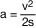
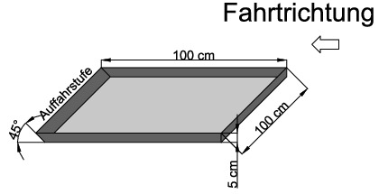
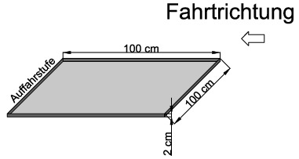
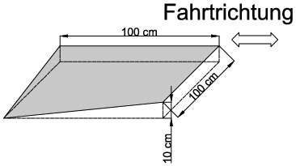
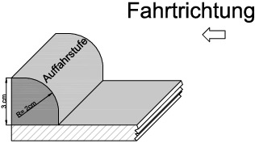

- 1.
Allgemeine Prüfbedingungen
- 1.1
Die Prüfungen sind auf einer Fahrbahn mit ebener, trockener und griffiger Beton- oder Asphaltoberfläche durchzuführen. In Längsrichtung darf die Prüfstrecke keine größere Steigung als 1 % und keine größere Schrägneigung als 3 % aufweisen.
- 1.2
Die Umgebungstemperatur muss zwischen 0 °C und 45 °C liegen.
- 1.3
Die Prüfungen dürfen nur stattfinden, wenn die Ergebnisse nicht vom Wind beeinflusst werden.
- 1.4
Bei den Prüfungen muss der Akkuladestand des Fahrzeugs mindestens 75 % betragen.
- 1.5
Bei Luftreifen ist vor den Prüfungen der vom Hersteller für den normalen Betrieb vorgesehene Fülldruck einzustellen.
- 1.6
Die Masse des Fahrzeugs muss der Masse in fahrbereitem Zustand entsprechen.
- 1.7
Bei den Prüfungen ist ein Fahrer mit einer Masse von 70 kg bis 100 kg vorzusehen.
- 2.
Prüfverfahren
- 2.1
Bauartbedingte Höchstgeschwindigkeit
- 2.1.1
Zur Ermittlung der bauartbedingten Höchstgeschwindigkeit muss das zu prüfende Fahrzeug über eine Strecke von mindestens 50 m mit maximaler Antriebsleistung gefahren werden. Dabei ist die gefahrene Höchstgeschwindigkeit zu ermitteln. Die Prüfung ist im Anschluss in die entgegengesetzte Richtung der Strecke zu wiederholen.
- 2.1.2
Die Höchstgeschwindigkeit des Fahrzeugs wird in km/h durch eine ganze Zahl ausgedrückt, die dem arithmetischen Mittel der bei zwei aufeinanderfolgenden Prüfungen in jeweils beiden Fahrtrichtungen ermittelten Geschwindigkeitswerte, die nicht mehr als 10 % voneinander abweichen dürfen, am nächsten kommt. Liegt das arithmetische Mittel genau in der Mitte zwischen zwei ganzen Zahlen, so wird aufgerundet.
- 2.1.3
Die bei den Prüfungen ermittelte Höchstgeschwindigkeit darf von der angegebenen bauartbedingten Höchstgeschwindigkeit nicht mehr als 10 % abweichen.
- 2.1.4
Wenn das Elektrokleinstfahrzeug über einen eigenen Geschwindigkeitsmesser mit Anzeige verfügt, so kann dieser hierbei auf seine Genauigkeit der Anzeige überprüft werden. Wenn er eine Genauigkeit von maximal 10 % Toleranz nach oben und 0 % nach unten aufweist, kann dieser fahrzeugeigene Geschwindigkeitsmesser für alle weiteren Fahrtests verwendet werden, bei denen die Fahrzeuggeschwindigkeit relevant ist.
- 2.2
Verzögerung
- 2.2.1
Das Fahrzeug wird auf der Prüfstrecke mit der bauartbedingten Höchstgeschwindigkeit geradeaus gefahren. An einem festgelegten Punkt wird mit allen Verzögerungseinrichtungen gleichzeitig schnellstmöglich bis zum Stillstand maximal verzögert, solange dies ohne Sturzgefährdung (z. B. durch ein blockierendes Vorderrad bei Einspurfahrzeugen) möglich ist. Bei Sturzgefährdung muss die aufgebrachte Bremskraft entsprechend reduziert werden, damit das Fahrzeug während des Bremsvorgangs sturzfrei beherrschbar bleibt.
- 2.2.2
Der benötigte Anhalteweg wird auf zwei Nachkommastellen in Metern gemessen.
- 2.2.3
Die Messung ist in mindestens fünf aufeinanderfolgenden Prüfungen zu wiederholen.
- 2.2.4
Mit der nachfolgenden Formel wird die erreichte Durchschnittsverzögerung berechnet. Die Verzögerung des Fahrzeugs wird in m/s
2 durch eine Dezimalzahl mit einer Nachkommastelle ausgedrückt.
|  |
| a | = Durchschnittsverzögerung [m/s2] |
| v | = Ausgangsgeschwindigkeit [m/s] |
| s | = Anhalteweg [m] |
Der Wert für die jeweilige Verzögerung wird auf die erste Stelle nach dem Komma gerundet.
- 2.2.5
Zur Überprüfung der Mindestverzögerung bei Ausfall einer Bremseinrichtung wird:
- a)
bei unabhängig voneinander bedienbaren Bremsen der obige Fahrversuch wiederholt, jedoch mit dem Unterschied, dass jeweils nur eine Bremse jeweils in mindestens drei aufeinanderfolgenden Prüfungen betätigt wird;
- b)
bei kombinierten Bremseinrichtungen je eine der Bremsen geeignet außer Funktion gesetzt und der obige Fahrversuch wiederholt.
- 2.3
Fahrdynamik
- 2.3.1
Ergänzend zu Nummer 1.1 muss die Fahrbahn für die Fahrdynamikprüfungen jeweils die in den nachfolgenden Prüfungen beschriebenen Fahrbahnelemente aufweisen.
- 2.3.2
In den Prüfungen sind die Fahrbahnelemente jeweils mit der bauartbedingten Höchstgeschwindigkeit und mit einer Geschwindigkeit von 8 ± 2 km/h zu befahren. Zusätzlich sind die Fahrbahnelemente bei den Prüfungen 1 und 2 (je nur an den Auffahrstufen) und 4 (mit direktem Kontakt des in Fahrtrichtung vorderen Rades an die Auffahrstufe/Bordsteinkante) jeweils aus dem Stillstand anzufahren.
- 2.3.3
Das Fahrzeug muss bei jeder Prüfung das jeweilige Fahrbahnelement vollständig überfahren und dabei jederzeit für den Fahrenden beherrschbar bleiben. Die vom Fahrenden gewünschte Fahrtrichtung muss beibehalten werden, wobei eine maximale Abweichung zwischen der Soll- und der Ist-Trajektorie von 20 Grad zulässig ist. Selbstbalancierende Fahrzeuge müssen während den Prüfungen die Balance einhalten und dürfen insbesondere nicht plötzlich die Selbstbalancefunktion deaktivieren.
- 2.3.4
Prüfung 1 (Vertiefung)
- 2.3.4.1
Aufbau des Fahrbahnelements:
Eine Vertiefung zur Fahrebene mit den Maßen von mindestens 100 cm x 100 cm x 5 cm (L x B x H) mit senkrechten Wänden und einer Ausfahrrampe im Winkel von 45 Grad.
|  |
| Bild 1: Vertiefung (rechts) mit Ausfahrrampe (links) |
- 2.3.4.2
Mit dem zu prüfenden Fahrzeug ist die Vertiefung gerade über die Kante in Richtung Rampe parallel zur eingezeichneten Fahrtrichtung zu durchfahren. Bei einem mehrspurigen zu prüfenden Fahrzeug ist die Versuchsfahrt zusätzlich mit nur einer Spur durch die Vertiefung zu wiederholen.
- 2.3.5
Prüfung 2 (Ab- und Auffahrstufe)
- 2.3.5.1
Aufbau des Fahrbahnelements:
Eine Ab- und Auffahrstufe mit 2 cm Höhendifferenz zur Fahrebene (Größe 100 cm x 100 cm).
|  |
| Bild 2: Ab- und Auffahrstufe (von rechts nach links) |
- 2.3.5.2
Mit dem zu prüfenden Fahrzeug ist die Vertiefung gerade über die Kante in Richtung Auffahrstufe parallel zur eingezeichneten Fahrtrichtung zu durchfahren. Bei einem mehrspurigen zu prüfenden Fahrzeug ist die Versuchsfahrt zusätzlich mit nur einer Spur durch die Vertiefung zu wiederholen.
- 2.3.6
Prüfung 3 (Einseitige Absenkung)
- 2.3.6.1
Aufbau des Fahrbahnelements:
Eine Wegstrecke, auf der die Fahrebene in Fahrtrichtung linksseitig auf einer Länge von 100 cm um 10 cm abfällt bzw. rechtsseitig ansteigt (einseitige Absenkung bzw. Auffahrt).
|  |
| Bild 3: Einseitige Absenkung |
- 2.3.6.2
Mit dem zu prüfenden Fahrzeug ist die einseitig abfallende Wegstrecke ab- und aufwärts parallel zur eingezeichneten Fahrtrichtung zu befahren. Das Kantenprofil des Fahrbahnelements mit einer Höhe von 10 cm muss dabei nicht überfahren werden.
- 2.3.7
Prüfung 4 (Bordsteinprofil)
- 2.3.7.1
Aufbau des Fahrbahnelements:
Eine Bordsteinkante mit Profil wie in Bild 4 dargestellt und einem Höhenunterschied zwischen Fahrbahnniveau und Bordsteinoberkante von 3 cm.
|  |
| Bild 4: Bordsteinprofil |
- 2.3.7.2
Mit dem zu prüfenden Fahrzeug ist die Bordsteinkante aufwärts unter einem Winkel von 90 Grad und unter einem Winkel von 45 Grad zu überfahren.
- 2.4
Antriebsdeaktivierung
- 2.4.1
Das Fahrzeug wird auf der Prüfstrecke mit Schrittgeschwindigkeit gefahren. Die fahrende Person steigt bei dieser Geschwindigkeit gezielt vom Fahrzeug ab und nimmt die Hände von der Lenk- oder Haltestange.
- 2.4.2
Es muss erkennbar sein, dass der Fahrzeugantrieb innerhalb von 1,0 s nach dem Absteigen automatisch deaktiviert wird und das Fahrzeug nicht motorisch betrieben weiter- oder losrollt.
- 2.4.3
Bei selbstbalancierenden Fahrzeugen wird zusätzlich folgender Test durchgeführt:
- 2.4.3.1
Der Prüfer steht neben dem Fahrzeug und schaltet das Fahrzeug in den fahrbereiten Zustand. Dann nimmt der Prüfer die Hände vom Fahrzeug und lässt es los.
- 2.4.3.2
Der Fahrzeugantrieb darf nicht aktiviert werden und das Fahrzeug darf nicht losfahren.